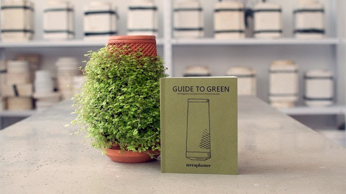

FAQ
Frequently Asked Questions
Current Status: Setting up Mass Production
Successfully funded on Kicsktarter on July 20, 2020 with over 55K
Backers!
So why is delivery set to Q2 2023?
We are on the ground at the factories with the production team to ensure everything runs smoothly
and the output matches the product we’ve worked so hard to develop. We continue to be unwavering
in our demands from production partners. Every single tevaplanter produced is to be as perfect as
the ones in our studio. We will not compromise.
With manufacturing being our top priority, we are also working on other aspects of the project
to bring you a truly amazing experience. We want to make sure all of our supporters have the
necessary tools and knowledge for growing healthy and flourishing plants at home on their
tevaplanter, which is why we created a beautiful and comprehensive growing guide which
will be included with each tevaplanter.

-
What kinds of plants can I grow?
The tevaplanter is suitable for thousands of different types of plants. Many of the houseplants that come in a pot will grow well on a terrplanter. The plants that grow naturally in the jungle, rainforest, or near a water source are best suited for the tevaplanter. Some examples include types of: orchids, ferns, begonias, hoyas, moss, carnivorous plants, dischidia and more. Each example given is a family which consists of thousands of types of species. Each tevaplanter will come with a guide that will include more information about matching plant types and care instructions.
-
Where can I get seeds and/or plants?
You can get several types of seeds like buckwheat, sinapis, flax, watercress, chia etc. at your local health food store. Plants, grass seeds, and other types of seeds can be found at your local plant nursery. Although both seeds and plants can also be purchased online. We also plan to provide a list of our recommendations soon.
-
Is it possible to grow herbs?
Most herbs are plants that grow large and need deep roots in the ground. Therefore, although some herbs can grow on the tevaplanter they are not the ideal solution for them. Edible seeds of plants which are commonly used for sprouting (ie, chia, buckwheat, sinapis, flax, watercress) can sprout and grow on the tevaplanter for several weeks.
-
How do plants get their nutrients or fertilizer?
The appropriate nutrients or fertilizer can be dissolved in water and sprayed directly onto the plant roots which are visible on the exterior surface of the tevaplanter. Each tevaplanter will come with a guide that will include more information and care instructions.
-
Can I use normal tap water?
In most cases, yes. However, if there is an issue with the quality of the water in your area or if the water contains a lot of limestone (calcium) then we suggest filtering the water before using it with the tevaplanter. Besides filtering the water, there are other simple solutions that we have tested to get suitable water, including; collecting rainwater or A/C water or simply using distilled water.
-
How often do I need to add water?
The tevaplanter acts as a water bank for the plant - slowly releasing water from the interior cavity through the walls to the plant roots on the exterior surface. The rate of perspiration and evaporation is dependent on the temperature and humidity levels in the room. Our estimated range is around 5-15 days. To see when you need to add water, simply lift the lid and peek into the tevaplanter. Each tevaplanter will come with a guide that will include more information and care instructions.
Copyright © 2022, principleinc
Privacy Policy - Contact Us - Terms of Service
The technology behind the tevaplanter is protected by patents granted and
pending around the world.
All rights reserved by principleinc Studio.